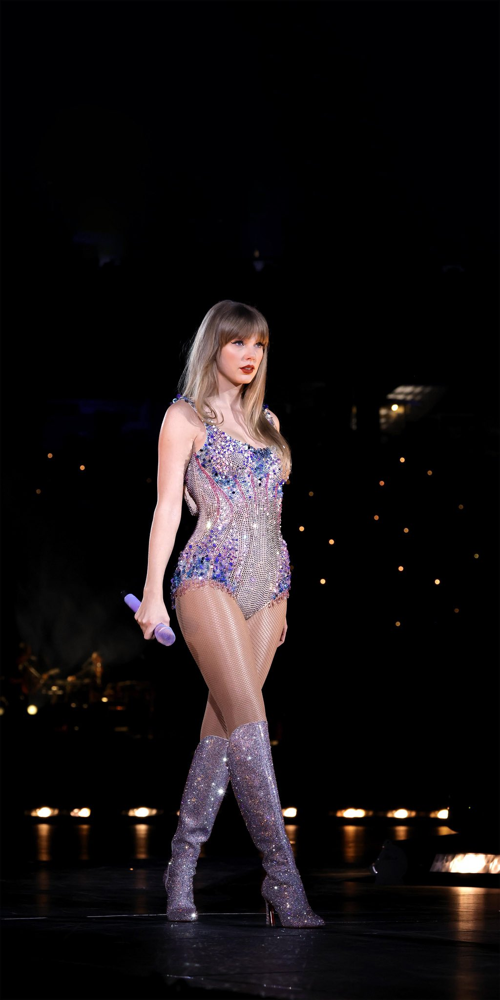

Cantoras
- 
-

Demi Lovato
Possui uma voz poderosa e versátil. Ela alcança notas altas com muita força e também transmite emoção nos trechos mais suaves.
Outro motivo é sua autenticidade. Demi usa suas músicas para falar sobre temas importantes, como saúde mental e amor-próprio, criando conexão com o público.
Além disso, ela é um exemplo de superação. Mesmo enfrentando desafios, continua firme em sua carreira, inspirando milhões de pessoas ao redor do mundo.
Álbuns de estúdio: 9
Taylor Swift
Consegue se reinventar constantemente. Ela começou na música country, depois se lançou no pop e também explorou folk e indie, mostrando grande versatilidade vocal e artística.
Além disso, suas músicas contam histórias reais e emocionantes. Suas letras falam sobre relacionamentos, crescimento pessoal e desafios da vida, criando uma forte conexão com o público.
Ela também se destaca pelo impacto cultural e pela presença de palco. Com talento, autenticidade e relevância, Taylor se consolidou como uma das artistas mais admiradas do mundo da música.
Álbuns de estúdio: 12
Selena Gomez
Ela começou no pop adolescente com a banda Selena Gomez & the Scene, depois seguiu carreira solo explorando estilos como dance-pop, R&B e pop alternativo.
Suas letras são sinceras e abordam temas como amor próprio, aceitação e superação. Ela utiliza sua música para empoderar e conectar-se com seu público, criando uma forte identificação.
Além disso, Selena se destaca por sua autenticidade e coragem em compartilhar suas experiências pessoais através da música. Com uma carreira sólida e crescente, ela continua a ser uma das artistas mais influentes da música pop.
Álbuns de estúdio: 4
Sabrina Carpenter
Tem habilidade em se reinventar musicalmente. Ela começou no pop adolescente e, ao longo dos anos, explorou diversos estilos, incluindo pop alternativo, folk e R&B, sempre mantendo sua identidade artística.
Suas letras são conhecidas por serem sinceras e autênticas. Sabrina aborda temas como relacionamentos, empoderamento feminino e experiências pessoais, criando uma conexão genuína com seu público.
Além disso, ela se destaca por sua presença de palco e dedicação à música. Com uma carreira sólida e crescente, Sabrina continua a conquistar fãs ao redor do mundo, consolidando-se como uma artista completa e admirada.
Álbuns de estúdio: 7
Olivia Rodrigo
Tem habilidade em criar músicas que tocam profundamente o público. Com letras sinceras e emocionantes, ela aborda temas como relacionamentos, inseguranças e crescimento pessoal. Sua voz única e estilo musical cativante conquistaram fãs ao redor do mundo.
Além disso, Olivia se destaca por sua autenticidade e coragem em compartilhar suas experiências através da música. Ela se tornou uma voz importante para a geração Z, inspirando jovens a se expressarem e se conectarem com suas emoções.
Com uma carreira promissora pela frente, Olivia Rodrigo continua a impressionar com seu talento e dedicação à música. Sua jornada artística é uma inspiração para muitos e promete ainda mais sucessos no futuro.
Álbuns de estúdio: 2
Beyoncé
Ela começou no R&B e pop, explorou o rock com B'Day, o eletrônico com 4, o visual com Beyoncé, o folk com Lemonade, o dance com Renaissance e o country com Cowboy Carter.
Suas letras são profundas e abordam temas como amor, feminismo, identidade e resistência. Ela utiliza sua música para empoderar e provocar reflexão, criando uma conexão genuína com seu público.
Além disso, Beyoncé é reconhecida por sua presença de palco e performances energéticas. Ela é uma das artistas mais premiadas da história, com 35 Grammys conquistados até 2025.
Álbuns de estúdio: 8
Katy Perry
Cria músicas pop cativantes e cheias de energia. Com hits como "I Kissed a Girl", "Teenage Dream" e "Firework", ela conquistou fãs ao redor do mundo.
Além disso, Katy se destaca por sua presença de palco e estilo único. Suas performances são marcadas por cenários criativos e figurinos ousados, tornando cada show uma experiência inesquecível.
Ela também é reconhecida por sua autenticidade e coragem em expressar suas emoções através da música. Com uma carreira sólida e crescente, Katy Perry continua a ser uma das artistas mais influentes da música pop.